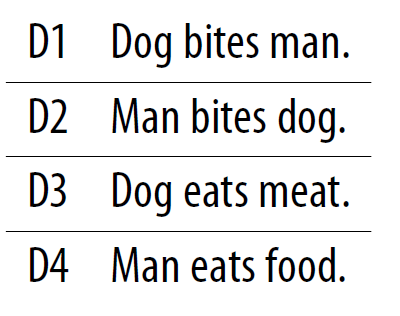

4.2 One-Hot Vectors
A word as a single 1 in a long, sparse vector.
1. The big idea
Give every word in the vocabulary a unique integer id. Represent a document as a stack of (|V|)-dimensional binary vectors, one per token.
That is one-hot encoding. It is the first vectorization you should be able to write on paper.
The toy corpus from note 4.1:

After lowercasing and dropping punctuation, (V =) [dog, bites, man, eats, meat, food]. Any order is legal. We use first-seen order.
scikit-learn’s OneHotEncoder does the same job on categorical columns. The docs are the implementation reference. The idea is what this note is for.
2. How a word becomes a vector
Word (w) gets an id (w_{\text{id}}) between 1 and (|V|). Its vector is all zeros except a 1 at that index.
| Word | id | One-hot |
|---|---|---|
| dog | 1 | [1 0 0 0 0 0] |
| bites | 2 | [0 1 0 0 0 0] |
| man | 3 | [0 0 1 0 0 0] |
| meat | 4 | [0 0 0 1 0 0] |
| food | 5 | [0 0 0 0 1 0] |
| eats | 6 | [0 0 0 0 0 1] |
A document is the sequence of those vectors. (D_1) = “dog bites man” becomes
[[1 0 0 0 0 0]
[0 1 0 0 0 0]
[0 0 1 0 0 0]]
(D_2) = “man bites dog” uses the same three vectors in a different order. The encoding still knows the order. Bag of words (note 4.3) will throw that away.
3. What it gets right
The scheme is easy to explain and easy to code. Each column is a word. A 1 means “this token is that word.” There is no hidden geometry.
If the vocabulary is tiny and every test sentence uses only those words, one-hot is a honest baseline. You will still meet it as the input layer of a neural language model: the network’s first job is to multiply that sparse vector by an embedding matrix.
4. Four problems you will hit
Sparsity. Real vocabularies are tens or hundreds of thousands of types. Each word is a giant vector of zeros. Storage, arithmetic, and learning all get worse. Sparse high-dimensional features overfit.
Variable length. Ten tokens give ten rows. Five tokens give five. Most classical learners want a fixed-length feature vector. You cannot drop a one-hot matrix into logistic regression without collapsing it first (that collapse is bag of words).
Out of vocabulary (OOV). Train on the toy corpus. At runtime you see “man eats fruit.” There is no column for fruit. The encoder has no legal vector. One-hot cannot invent one.
No similarity. dog and puppy are orthogonal. eats and ate are orthogonal. Cosine of two different one-hots is 0. The geometry does not know that words mean related things.
5. When you would still use it
Use one-hot when you need a transparent token identity, or when a later layer will learn a dense map. Do not ship a one-hot document matrix as the only features of a production classifier on a large vocabulary.
In a net, the first multiply embedding_matrix @ one_hot is just a table lookup. You will rarely build the one-hot by hand; tf.keras.layers.Embedding does the lookup from integer ids. The picture in this note is still the right one: the id is a coordinate, not a meaning.
A practical check: if your “document vector” has a different number of rows for every review, you are still in one-hot-sequence land. Collapse it (BoW) or embed-and-pool before a linear model.
Note 4.3 collapses the sequence into one count vector. That fixes the length problem. It does not fix OOV or similarity.
6. Practice
-
Write the one-hot sequence for (D_3) = “dog eats meat” using the id table above.
-
A new sentence arrives: “man eats fruit.” Which tokens can you encode, and what breaks?
-
Why is one-hot a poor feature matrix for logistic regression on documents of different lengths?